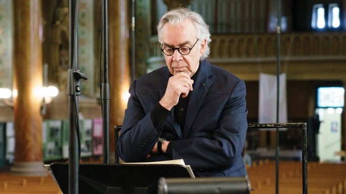

Howard Shore
Howard Leslie Shore OC (born October 18, 1946) is a Canadian composer and conductor noted for his film scores. He has composed the scores for over 80 films, most notably the scores for The Lord of the Rings and The Hobbit film trilogies. He won three Academy Awards for his work on The Lord of the Rings, with one being for the song "Into the West", an award he shared with Eurythmics lead vocalist Annie Lennox and writer/producer Fran Walsh, who wrote the lyrics. He is also a consistent collaborator with director David Cronenberg, having scored all but one of his films since 1979.
Shore has also composed a few concert works including one opera, The Fly, based on the plot of Cronenberg's 1986 film, which premiered at the Théâtre du Châtelet in Paris on July 2, 2008; a short piece named Fanfare for the Wanamaker Organ and the Philadelphia Orchestra; and a short overture for the Swiss 21st Century Symphony Orchestra. Shore has also composed for television, including serving as the original musical director for the American sketch comedy show Saturday Night Live from 1975 to 1980.
In addition to his three Academy Awards, Shore has also won three Golden Globe Awards and four Grammy Awards.
Conducting and Performing
Since 2004, he has toured the world conducting local orchestras in the performance of his new symphonic arrangement of his highly acclaimed Lord of the Rings scores. The new work is entitled The Lord of the Rings: Symphony in Six Movements. There are two movements for each of the movies, and an intermission between the second and third (or first and second film titles) movements. The concert presentation of the symphony also includes projected still images of sketches by John Howe and Alan Lee relating the music being performed to scenes from the films. Recently, however, Shore has been busy with other projects, leaving other conductors including Markus Huber, Ludwig Wicki, Alexander Mickelthwaite, and John Mauceri to lead the orchestras.
April 24, 2008 marked the North American Live to Projection debut of Fellowship of the Ring, with the score performed live by the Winnipeg Symphony Orchestra, conducted by Ludwig Wicki. Wicki also conducted the Filene Center Orchestra at the Wolf Trap Farm Park in Vienna, Virginia on May 21 and 22, 2008 in the U.S. premiere of the Fellowship of the Ring Live to Projection.
September 16, 2010 Shore conducted the RSO Vienna (Vienna Radio Symphony Orchestra) which performed "In Dreams from The Fellowship of the Ring" at Hollywood in Vienna in Vienna, Austria. Shore was commissioned by Macy's to write a Fanfare for the Store's 150th anniversary featuring the Philadelphia Orchestra and the Wanamaker Organ, the world's largest playing pipe organ. The work was debuted in the Grand Court of Macy's Philadelphia Store on September 27, 2008 in a concert that drew reviews from most of the major East Coast newspapers.
Shore's opera The Fly had its world premiere performance at the Théâtre du Châtelet in Paris on July 2, 2008 and its United States premiere at Los Angeles Opera on September 7, 2008. The production was directed by David Cronenberg and conducted by Plácido Domingo. The Fly had a new production mounted by Theatre Trier in Germany in 2014 staged by Sebastian Welker and conducted by Joongbae Jee.
| Year | Category | Nominated Work | Result |
|---|---|---|---|
| 2002 | Best Original Score | The Lord of the Rings: The Fellowship of the Ring | Won |
| 2004 | Best Original Score | The Lord of the Rings: The Return of the King | Won |
| 2004 | Best Original Song | Into the West from The Lord of the Rings: The Return of the King | Won |
| Total Wins | 3 |